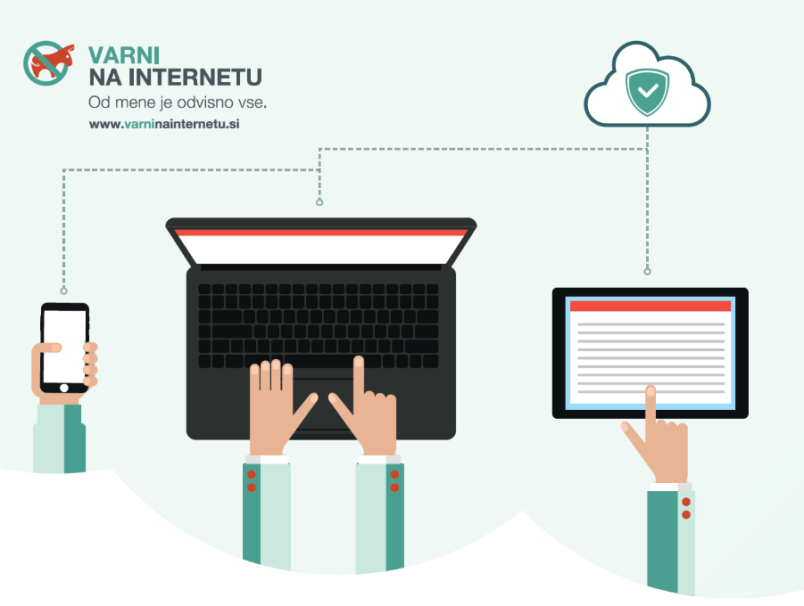

V današnjem času je internet postal nepogrešljiv del našega vsakdana. Uporabljamo ga za šolo, delo, komunikacijo, zabavo in iskanje informacij. Čeprav nam ponuja ogromno priložnosti, pa lahko nepravilna ali pretirana uporaba negativno vpliva na naše zdravje, počutje in odnose. Zato je pomembno, da razvijemo zdrave spletne navade.
Prva in ena najpomembnejših navad je uravnoteženje časa, ki ga preživimo na spletu. Hitro se lahko zgodi, da ure in ure preživimo na družbenih omrežjih ali ob gledanju videov, ne da bi se tega sploh zavedali. Zato je dobro, da si postavimo časovne omejitve in si vzamemo odmore. Na primer, po vsaki uri uporabe interneta si lahko vzamemo 10 minut odmora, se raztegnemo ali gremo na svež zrak. Tako poskrbimo za svoje telo in zmanjšamo utrujenost oči.
Druga pomembna navada je kritično razmišljanje o informacijah, ki jih najdemo na spletu. Internet je poln različnih vsebin, vendar niso vse resnične ali zanesljive. Pomembno je, da preverimo vire, primerjamo informacije in ne verjamemo takoj vsemu, kar preberemo. S tem se zaščitimo pred lažnimi novicami in zavajajočimi informacijami.
Tretji vidik zdravih spletnih navad je skrb za zasebnost in varnost. Na spletu pogosto delimo osebne podatke, fotografije in mnenja, vendar moramo biti previdni, kaj in s kom delimo. Uporabljajmo močna gesla, ne delimo svojih podatkov z neznanci in pazimo, katere povezave odpiramo. Prav tako je pomembno, da spoštujemo zasebnost drugih in ne širimo informacij brez njihovega dovoljenja
